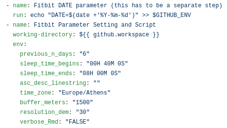

fitbitViz
The fitbitViz R package allows the extraction of data and the visualization of ‘ggplot2’, ‘Leaflet’ and 3-dimensionsal ‘Rayshader’ Maps using the Fitbit Web API. If you own any of the Fitbit activity trackers you can take advantage of this package. A detailed explanation of the functionality can be found both in the Vignette and in the blog post.
The 3-dimensional Rayshader Map requires the installation of the CopernicusDEM R package which includes the 30- and 90-meter elevation data.
Requirements:
To make use of this R package you have first to register an Application in https://dev.fitbit.com/. By registering an application you will receive the Fitbit token which besides your existing user-id is required so that you can take advantage of the fitbitViz functions.
There are many resources on the web on how to setup a Fitbit application. I modified the following guide which explains in detail how to register an application and then receive a token to retrieve the Fitbit data for a specific time period (maximum a year). The next images and comments explain the whole process,
-
Go to https://dev.fitbit.com/ and click on Manage > Register an App
Login with your Fitbit credentials and follow the prompts. I used as URL in the Registration Page my Fitbit user-id url,
https://www.fitbit.com/user/USER_ID. You have to replace the USER_ID in the url with your specific user-id. Then in the Redirect URL field usehttps://localhost. Tick the remaining options as in the next image, read and agree to the terms of service and click Register to register the application.
-
Once the app is created, click on the ‘OAuth 2.0 tutorial page’ weblink near the bottom of the screen:

-
Scroll down to the end of 1. Authorize and right click on the provided authorization URL (in blue color) to open this URL on a new web browser tab which will show the Fitbit authorization interface. Change the auth period to 1 year so that you don’t have to go through this too often and tick all options before clicking Allow (you will probably play with the other endpoints at some point in the future)

After clicking Allow, the browser tab redirects to the callback URL. You’ll have to copy and paste the full URL which now includes also the access token to the 2. Parse response header of the previous tab (where we have seen also the 1. Authorize section). The required access token for your application that you can use in this package will appear below the text box (it’s a long string of characters).
You now have your token and can start using the fitbitViz R package to access and visualize your data.
Keep track of your activities using ‘fitbitViz’, ‘Blogdown’ and ‘Github Actions’
The functions of the fitbitViz R package can be used in an automatic way so that the user can keep track of the Visualizations and data over time.
From the first moment I’ve started implementing the fitbitViz R package this is what I actually had in my mind. You can have a look to my Fitbit Visualizations website. The following steps explain in detail how this can be achieved:
- Fork the fitbitVizBlog repository ( !!! Not this repository but the one that includes the blog posts !!! )
- Create the following secrets required for the .github/workflows/gh_fitbit_blog.yaml file by navigating to Settings >> secrets (be aware that the AWS_ACCESS_KEY_ID and AWS_SECRET_ACCESS_KEY are optional and required only if you want to receive the 3-dimensional Rayshader Visualization)
- USER_ID: click on ‘New repository secret’ and use USER_ID as Name and your Fitbit user-id as Value
- FITBIT_TOKEN: click on ‘New repository secret’ and use FITBIT_TOKEN as Name and the token you received from your previously registered Fitbit application as Value
- GH_PAT: First create a Personal Access Token by giving as Note a name and then ticking in Select scopes the workflow (Update GitHub Action workflows) scope and lastly click on Generate Token. Then click on ‘New repository secret’ and use GH_PAT as Name and the copied Generated Token as Value
- EMAIL: click on ‘New repository secret’ and use EMAIL as Name and the e-mail you use on Github as Value
- AWS_ACCESS_KEY_ID: click on ‘New repository secret’ and use AWS_ACCESS_KEY_ID as Name and insert your aws access key id in the Value field ( the aws credentials are required for the Copernicus Elevation Data, this guide explains how to receive the aws credentials )
- AWS_SECRET_ACCESS_KEY: click on ‘New repository secret’ and use AWS_SECRET_ACCESS_KEY as Name and insert your aws secret access key in the Value field
What it remains is to modify the .github/workflows/gh_fitbit_blog.yaml file to adjust the
- current cron-job settings which runs every Sunday at 23:00 pm
- current fitbitViz parameters
- 

Regarding the fitbitViz parameters (.github/workflows/gh_fitbit_blog.yaml file) at it’s current state the application takes:
- DATE: this parameter corresponds to the current Date ( the Date that the Cron-Job runs ). You can set this parameter also to a character string such as DATE=“2021-05-16”; if you want to use as the end Date this specific date. Be Aware this parameter is defined in a separate github action step.
- previous_n_days: this parameter specifies the number of days before the current DATE for which the Fitbit data will be downloaded (I’ve set it to 6 to visualize and access data of the last week)
- sleep_time_begins: this is your scheduled sleep time in form of a lubridate::hms(“00H 40M 0S”) object (adjust the input depending on your sleep time)
- sleep_time_ends: this is your scheduled wake up time in form of a lubridate::hms(“08H 00M 0S”) object (adjust the input depending on your wake up time)
-
asc_desc_linestring: this parameter is related to the GPS data of the 3-dimensional map especially if you keep track of your outdoor activities. There are 3 options but before making use of the 2nd. option make sure that there is an ascending and descending route, otherwise it will give an error:
- by specifying asc_desc_linestring=""; a single LINESTRING will be created based on the GPS data using a single color
- by specifying asc_desc_linestring=“TRUE”; the LINESTRING of the GPS data will be split into 2 parts using the highest elevation location as a split point (blue color for the ascending part and red color for the descending part)
- by specifying asc_desc_linestring=“17H 5M 0S”; the GPS data will be split into 2 parts using this input time as split point (adjust the time based on your data)
- time_zone: your current time zone as specified in lubridate::ymd_hms(tz = ..) function (it defaults to my current time zone which is Europe/Athens)
- buffer_meters: this parameter extends the 3-dimensional map by N-meters (the current default value is 1500 meters)
- resolution_dem: this parameter takes either 30 or 90 and corresponds to the resolution of the Copernicus elevation data (the current default value is 30 meters)
- verbose_Rmd: this last parameter is just for debugging in case you want to enable verbosity in the output .Rmd file (it defaults to “FALSE” and it takes also “TRUE” as input)
The order to modify, debug or include new code / functions to the files of this Github Repository is the following:
- first modify the gh_fitbit_blog.yaml file
- then modify the R code of the R_templates/data_template.R file
- and finally modify the Rmd code of the R_templates/functions_template.Rmd file
One important thing to keep in mind is that besides the Visualizations the user has access also to the pre-processed Fitbit data by clicking to a CSV button as shown in the next image,

- References:
Docker Image:
Docker images of the fitbitViz package are available to download from my dockerhub account. The images come with Rstudio and the R-development version (latest) installed. The whole process was tested on Ubuntu 18.04. To pull & run the image do the following,
docker pull mlampros/fitbitviz:rstudiodev
docker run -d --name rstudio_dev -e USER=rstudio -e PASSWORD=give_here_your_password --rm -p 8787:8787 mlampros/fitbitviz:rstudiodevThe user can also bind a home directory / folder to the image to use its files by specifying the -v command,
docker run -d --name rstudio_dev -e USER=rstudio -e PASSWORD=give_here_your_password --rm -p 8787:8787 -v /home/YOUR_DIR:/home/rstudio/YOUR_DIR mlampros/fitbitviz:rstudiodevIn the latter case you might have first give permission privileges for write access to YOUR_DIR directory (not necessarily) using,
The USER defaults to rstudio but you have to give your PASSWORD of preference (see www.rocker-project.org for more information).
Open your web-browser and depending where the docker image was build / run give,
1st. Option on your personal computer,
2nd. Option on a cloud instance,
to access the Rstudio console in order to give your username and password.
Package Installation & Citation:
To install the package from CRAN use,
install.packages("fitbitViz")and to download the latest version of the package from Github,
remotes::install_github('mlampros/fitbitViz')If you use the fitbitViz R package in your paper or research please cite https://CRAN.R-project.org/package=fitbitViz:
@Manual{,
title = {{fitbitViz}: Fitbit Visualizations},
author = {Lampros Mouselimis},
year = {2022},
note = {R package version 1.0.3},
url = {https://CRAN.R-project.org/package=fitbitViz},
}